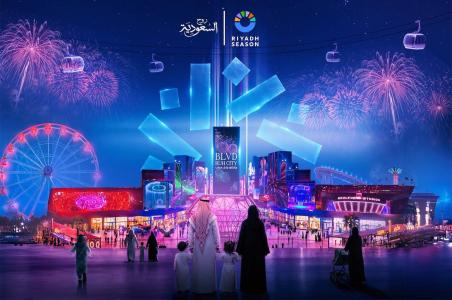
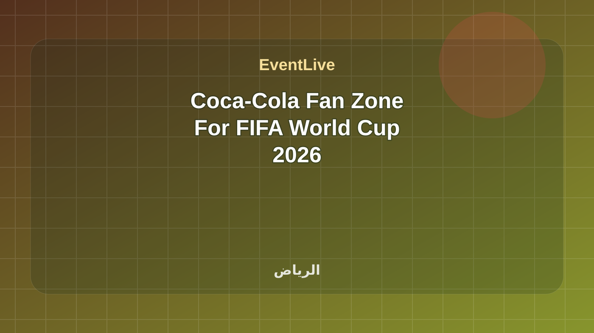
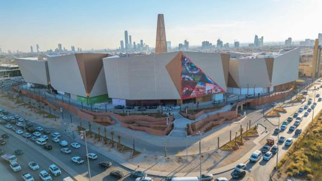
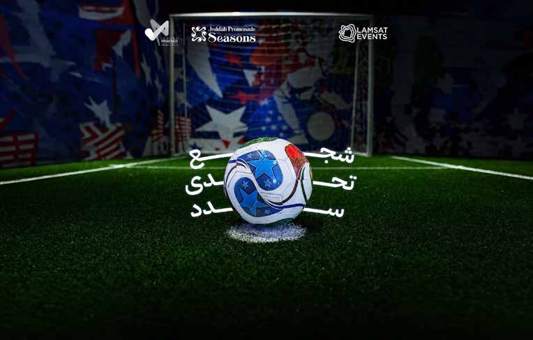
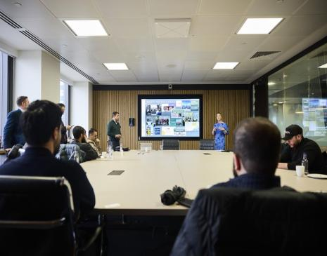
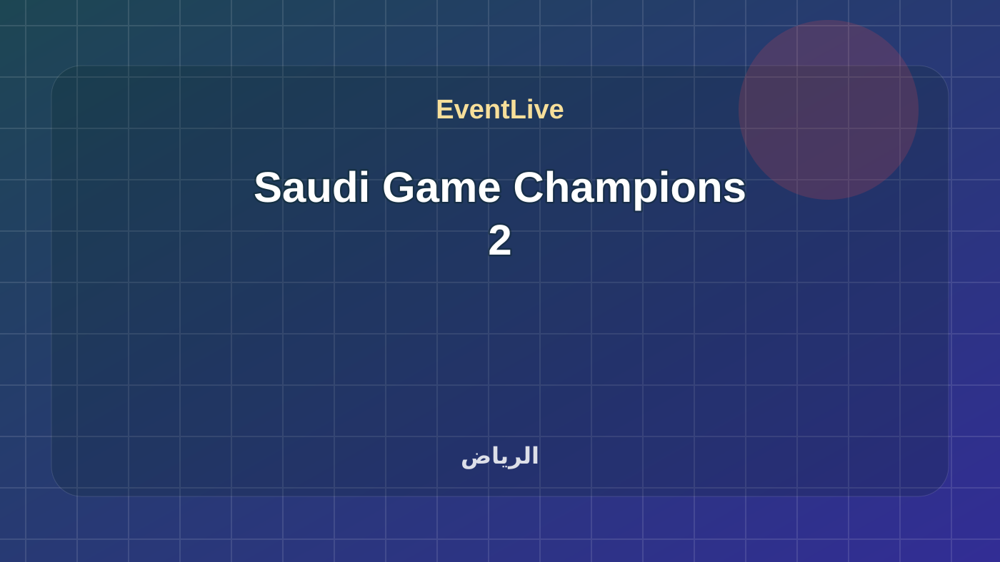
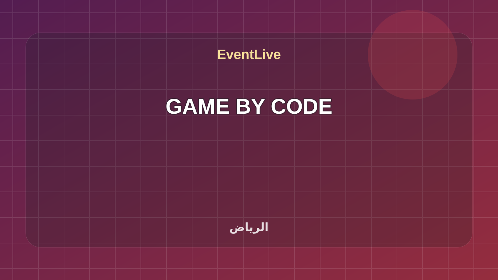
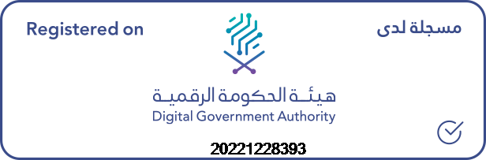

تابع ألعاب ورياضات إلكترونية
هذه الروابط تتحدث مع كل بناء وتعرض الفعاليات القادمة والجارية لهذا السياق فقط.
ألعاب ورياضات إلكترونية في السعودية مع وقت الفعالية ومكانها ومصدرها وحالة الجدول الحي.
هذه الروابط تتحدث مع كل بناء وتعرض الفعاليات القادمة والجارية لهذا السياق فقط.
Boulevard City is one of Riyadh Season’s most iconic entertainment hubs, offering a vibrant mix of attractions, from the dazzling dancing fountain to upscale dining, shopping, theaters, and immersive experiences for all ages. Visitors can explore OLULOU, where a towering dinosaur skeleton offers the perfect photo op, and let kids dive into four imaginative zones at PLAY-TOPIA. For thrill-seekers, Poppy Playtime delivers suspense inside an abandoned toy factory, A Lot Like Life challenges your bravery in a zombie outbreak, and The Conjuring opens October 15 with spine-chilling scenes from the haunted universe of Annabelle. Families can brave the haunted farm at Zeela House, while pop culture lovers enjoy FUNKO (from Nov 15), with giant figures and collectibles, and gamers embark on a real-world adventure inside MINECRAFT (also from Nov 15). Launching December 18, Flying Over Saudi offers a groundbreaking 5D flight experience that takes you on a 7-minute immersive ride above Saudi Arabia’s most iconic landmarks.

Boulevard City is one of Riyadh Season’s most iconic entertainment hubs, offering a vibrant mix of attractions, from the dazzling dancing fountain to upscale dining, shopping, theaters, and immersive experiences for all ages. Visitors can explore OLULOU, where a towering dinosaur skeleton offers the perfect photo op, and let kids dive into four imaginative zones at PLAY-TOPIA. For thrill-seekers, Poppy Playtime delivers suspense inside an abandoned toy factory, A Lot Like Life challenges your bravery in a zombie outbreak, and The Conjuring opens October 15 with spine-chilling scenes from the haunted universe of Annabelle. Families can brave the haunted farm at Zeela House, while pop culture lovers enjoy FUNKO (from Nov 15), with giant figures and collectibles, and gamers embark on a real-world adventure inside MINECRAFT (also from Nov 15). Launching December 18, Flying Over Saudi offers a groundbreaking 5D flight experience that takes you on a 7-minute immersive ride above Saudi Arabia’s most iconic landmarks.
تفاصيل الحضورLive It (Eshha) is one of Riyadh’s largest sports entertainment and family fan zones during the FIFA World Cup 2026. Designed to capture the excitement of the tournament, the venue features giant match screens, live entertainment, gaming zones, and interactive experiences for football fans of all ages. Book Now
تفاصيل الحضور
The Diriyah Biennale Foundation, in partnership with Coca-Cola, presents the Coca-Cola Fan Zone at JAX District, offering football fans a vibrant public viewing experience of the FIFA World Cup 2026™. Hosted within JAX District’s iconic warehouses, the fan zone features large cinema-grade screens, dedicated viewing galleries, and coverage of Saudi Arabia’s matches alongside key global fixtures through to the final. Visitors can also enjoy e-gaming zones, interactive football challenges, family areas, and curated entertainment activities, creating an immersive destination where sport, culture, and community come together in Riyadh. Book Now
تفاصيل الحضور
The Solitaire Fan Zone brings football fans together for an immersive FIFA World Cup 2026 viewing experience, featuring live match screenings in a stadium-inspired atmosphere. Visitors can enjoy a variety of entertainment activities, interactive challenges, and experiences throughout the tournament. The fan zone also features a diverse selection of brands across food and beverages, perfumes, fashion, and gaming, creating a vibrant destination for football enthusiasts, friends, and families alike. Book Now
تفاصيل الحضور
تقدّم بوابة المونديال في جدة تجربة جماهيرية متكاملة لمشاهدة مباريات كأس العالم على شاشات عملاقة، مع مطاعم، وألعاب، ومنطقة أطفال، وفعاليات للعائات ومحبي كرة القدم.
تفاصيل الحضورThe Esports World Cup 2026 returns to Riyadh from 6 July to 23 August, delivering a summer-long celebration of elite competition and live entertainment as top clubs and players battle across multiple genres and platforms. With a lineup spanning tactical shooters, MOBAs, fighting games, strategy, racing, and even chess—including global favourites such as League of Legends, Counter-Strike 2, Fortnite, and Rocket League—the festival reinforces Riyadh’s role as a leading hub for international esports. New for 2026, Trackmania joins the programme, bringing high-precision racing where competitors chase the fastest times on one of esports’ most skill-intensive stages. The Esports World Cup, a multi-game global esports tournament and festival, will unite the global e-gaming community, including players, fans, game producers, and publishers, with a focus on fostering connections and collaborations.
تفاصيل الحضورشاهد بطولة المملكة للبلوت، تجمع نخبة الاعبين من مختلف مناطق المملكة في منافسة رفيعة المستوى تبرز المواهب المحلية وتعزز ثقافة الألعاب الذهنية.
تفاصيل الحضورشاهد بطولة أبطال المملكة للشطرنج، تجمع نخبة الاعبين من مختلف مناطق المملكة في منافسة رفيعة المستوى تعزز ثقافة الألعاب الذهنية وتبرز المواهب المحلية.
تفاصيل الحضور
An immersive program designed to equip entrepreneurs with essential skills, expert mentorship, and a powerful network to build and scale tech startups. Access hands-on training, connect with top industry players, and unlock growth opportunities with investors and leading companies
تفاصيل الحضور
Join us on a journey that begins with your playable idea and evolves into a market-ready MVP and a clear roadmap for your studio. It starts with a Game Jam event where entrepreneurs will have the opportunity to showcase their skills, collaborate with other talented individuals, and gain valuable feedback on their game idea. After the Game Jam, the top 20 teams of entrepreneurs will qualify for the incubation program
تفاصيل الحضور
incubator designed to support university students in developing their games from concept to launch. Over a three-month incubation period, participants receive specialized mentorship and guidance. The program culminates in a showcase where projects are presented to industry experts and investors, with a special reward: the top team from each city earns a seat in the Mvplab program.
تفاصيل الحضور
A digital challenge focused on empowering PropTech startups that have surpassed the idea and MVP stage, aiming to support their journey of growth, product development, and enhancing their readiness for partnerships and investment.
تفاصيل الحضورThe Technology Experts Meeting Series provides an opportunity to learn about PropTech. It consists of multiple meetings presented by prominent players and experts in the field. The series includes discussions on the latest topics, opportunities, and challenges in the sector. Its aim is to enhance communication with investors and interested parties and stimulate creativity to create promising entrepreneurial opportunities.
تفاصيل الحضورJoin us on a journey that begins with your playable idea and evolves into a market-ready MVP and a clear roadmap for your studio. It starts with a Game Jam event where entrepreneurs will have the opportunity to showcase their skills, collaborate with other talented individuals, and gain valuable feedback on their game idea. After the Game Jam, the top 20 teams of entrepreneurs will qualify for the incubation program
تفاصيل الحضورA golden opportunity for creative thinkers and startup projects in Northern Borders Province to present innovative solutions, interact with a select group of experts, and leverage available resources to develop ideas into successful projects that enhance the advancement of the digital entrepreneurship ecosystem
تفاصيل الحضورThe 5th edition of the program consists of two startup incubators in the sector of Financial Solution Technologies that utilize AI. The program targets innovative entrepreneurs with digital business and scalable models. The program participants will be provided with the necessary tools and support in the technical, administrative, and financial aspects, in addition to supporting digital perks, with the aim of contributing to reaching the market and investors.
تفاصيل الحضورA specialized incubator to support the growth of startups in the field of artificial intelligence. The program aims to empower innovators and entrepreneurs to transform their ideas into viable tech solutions by providing an integrated environment that includes mentorship, advanced technical resources, funding, and strategic partnerships. The vision is to strengthen AI's position as a key driver of economic and social development.
تفاصيل الحضورThe Ministry of Communications and Information Technology announces the opening of registration for The Tech Frontiers – Cohort 2 track, which will be based in the technology capital of the world, Silicon Valley. Tech Frontiers – Cohort 2 is a 12- accelerator that will include 10 selected startups and help them expand their businesses through training and mentorship by global experts. Participants in the track will receive financing in partnership with leading venture capital firms.
تفاصيل الحضور